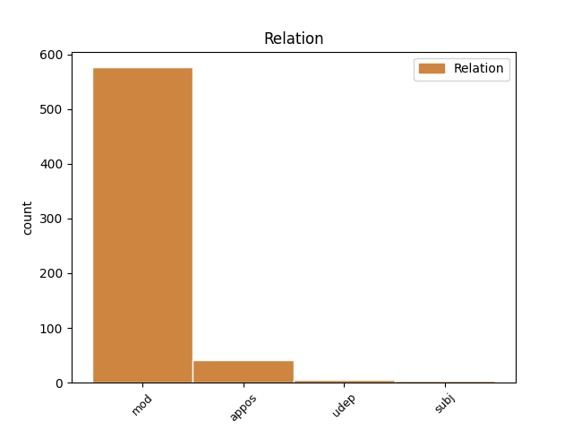

Distribution of features within this leaf

Agreement Rules sorted by frequency.
- When the dependent token is the modifer(mod) of the head token, and the dependent token is NOUN.
1 A _ _ _ _ 0 _ _ _
2 réir _ _ _ _ 0 _ _ _
3 fear-labhairt fear-labhairt NOUN Ncsmn Case=Nom|Gender=Masc|Number=Sing 0 _ _ _
4 gnothaichean gnothaiche NOUN Ncpmn Case=Nom|Gender=Masc|Number=Plur 3 mod _ _
5 Gàidhlig _ _ _ _ 0 _ _ _
6 Pàrtaidh _ _ _ _ 0 _ _ _
7 Nàiseanta _ _ _ _ 0 _ _ _
8 na _ _ _ _ 0 _ _ _
9 h-Alba _ _ _ _ 0 _ _ _
10 , _ _ _ _ 0 _ _ _
11 Mìcheal _ _ _ _ 0 _ _ _
12 Ruiseal _ _ _ _ 0 _ _ _
13 , _ _ _ _ 0 _ _ _
14 se _ _ _ _ 0 _ _ _
15 Pàrlamaid _ _ _ _ 0 _ _ _
16 na _ _ _ _ 0 _ _ _
17 h-Alba _ _ _ _ 0 _ _ _
18 an _ _ _ _ 0 _ _ _
19 cothrom _ _ _ _ 0 _ _ _
20 mór _ _ _ _ 0 _ _ _
21 don _ _ _ _ 0 _ _ _
22 Ghàidhlig _ _ _ _ 0 _ _ _
23 . _ _ _ _ 0 _ _ _
1 Bha _ _ _ _ 0 _ _ _
2 ro-shealladh _ _ _ _ 0 _ _ _
3 dhen _ _ _ _ 0 _ _ _
4 phrògram _ _ _ _ 0 _ _ _
5 againn _ _ _ _ 0 _ _ _
6 ann _ _ _ _ 0 _ _ _
7 an _ _ _ _ 0 _ _ _
8 Consalachd _ _ _ _ 0 _ _ _
9 na _ _ _ _ 0 _ _ _
10 h-Éireann _ _ _ _ 0 _ _ _
11 an _ _ _ _ 0 _ _ _
12 Dùn _ _ _ _ 0 _ _ _
13 Éideann _ _ _ _ 0 _ _ _
14 Diciadain _ _ _ _ 0 _ _ _
15 , _ _ _ _ 0 _ _ _
16 far _ _ _ _ 0 _ _ _
17 an _ _ _ _ 0 _ _ _
18 do _ _ _ _ 0 _ _ _
19 chuir _ _ _ _ 0 _ _ _
20 Dan Dan PROPN Nn-mn Case=Nom|Gender=Masc 0 _ _ _
21 Mulhall _ _ _ _ 0 _ _ _
22 , _ _ _ _ 0 _ _ _
23 an _ _ _ _ 0 _ _ _
24 t-Àrd-Chomhairliche àrd-chomhairliche NOUN Ncsmn Case=Nom|Gender=Masc|Number=Sing 20 appos _ SpaceAfter=No
25 , _ _ _ _ 0 _ _ _
26 fàilte _ _ _ _ 0 _ _ _
27 oirnn _ _ _ _ 0 _ _ _
28 . _ _ _ _ 0 _ _ _
1 Cha _ _ _ _ 0 _ _ _
2 bu _ _ _ _ 0 _ _ _
3 bheag _ _ _ _ 0 _ _ _
4 ar _ _ _ _ 0 _ _ _
5 n-iongnadh _ _ _ _ 0 _ _ _
6 agus _ _ _ _ 0 _ _ _
7 ar _ _ _ _ 0 _ _ _
8 n-aoibhneas aoibhneas NOUN Ncsmn Case=Nom|Gender=Masc|Number=Sing 0 _ _ _
9 an _ _ _ _ 0 _ _ _
10 uair uair NOUN Ncsfn Case=Nom|Gender=Fem|Number=Sing 8 subj _ _
11 a _ _ _ _ 0 _ _ _
12 rinn _ _ _ _ 0 _ _ _
13 sinn _ _ _ _ 0 _ _ _
14 a-mach _ _ _ _ 0 _ _ _
15 gur _ _ _ _ 0 _ _ _
16 h-ann _ _ _ _ 0 _ _ _
17 aig _ _ _ _ 0 _ _ _
18 seanair _ _ _ _ 0 _ _ _
19 Dhòmhnaill _ _ _ _ 0 _ _ _
20 Alasdair _ _ _ _ 0 _ _ _
21 , _ _ _ _ 0 _ _ _
22 Dòmhnall _ _ _ _ 0 _ _ _
23 mac _ _ _ _ 0 _ _ _
24 lain _ _ _ _ 0 _ _ _
25 'ic _ _ _ _ 0 _ _ _
26 Ràghaill _ _ _ _ 0 _ _ _
27 an _ _ _ _ 0 _ _ _
28 Eirisgeigh _ _ _ _ 0 _ _ _
29 a _ _ _ _ 0 _ _ _
30 fhuair _ _ _ _ 0 _ _ _
31 MacGille-Mhìcheil _ _ _ _ 0 _ _ _
32 an _ _ _ _ 0 _ _ _
33 innse _ _ _ _ 0 _ _ _
34 seo _ _ _ _ 0 _ _ _
35 ann _ _ _ _ 0 _ _ _
36 an _ _ _ _ 0 _ _ _
37 1865 _ _ _ _ 0 _ _ _
38 . _ _ _ _ 0 _ _ _
1 Bha _ _ _ _ 0 _ _ _
2 na _ _ _ _ 0 _ _ _
3 gillean gille NOUN Ncpmn Case=Nom|Gender=Masc|Number=Plur 0 _ _ _
4 a _ _ _ _ 0 _ _ _
5 bu _ _ _ _ 0 _ _ _
6 shine _ _ _ _ 0 _ _ _
7 aig _ _ _ _ 0 _ _ _
8 mo _ _ _ _ 0 _ _ _
9 sheanair _ _ _ _ 0 _ _ _
10 , _ _ _ _ 0 _ _ _
11 leithid leithid NOUN Ncsfn Case=Nom|Gender=Fem|Number=Sing 3 udep _ _
12 m’ _ _ _ _ 0 _ _ _
13 athar _ _ _ _ 0 _ _ _
14 fhìn _ _ _ _ 0 _ _ _
15 , _ _ _ _ 0 _ _ _
16 pòsta _ _ _ _ 0 _ _ _
17 ’s _ _ _ _ 0 _ _ _
18 a’ _ _ _ _ 0 _ _ _
19 fuireach _ _ _ _ 0 _ _ _
20 anns _ _ _ _ 0 _ _ _
21 a’ _ _ _ _ 0 _ _ _
22 bhaile _ _ _ _ 0 _ _ _
23 , _ _ _ _ 0 _ _ _
24 coltach _ _ _ _ 0 _ _ _
25 ri _ _ _ _ 0 _ _ _
26 bràthair _ _ _ _ 0 _ _ _
27 no _ _ _ _ 0 _ _ _
28 dhà _ _ _ _ 0 _ _ _
29 eile _ _ _ _ 0 _ _ _
30 , _ _ _ _ 0 _ _ _
31 agus _ _ _ _ 0 _ _ _
32 bha _ _ _ _ 0 _ _ _
33 teaghlach _ _ _ _ 0 _ _ _
34 mar _ _ _ _ 0 _ _ _
35 seo _ _ _ _ 0 _ _ _
36 ’nan _ _ _ _ 0 _ _ _
37 taic _ _ _ _ 0 _ _ _
38 dha _ _ _ _ 0 _ _ _
39 chéile _ _ _ _ 0 _ _ _
40 - _ _ _ _ 0 _ _ _
41 teaghlach _ _ _ _ 0 _ _ _
42 anns _ _ _ _ 0 _ _ _
43 an _ _ _ _ 0 _ _ _
44 fharsaingeachd _ _ _ _ 0 _ _ _
45 , _ _ _ _ 0 _ _ _
46 no _ _ _ _ 0 _ _ _
47 “ _ _ _ _ 0 _ _ _
48 extended _ _ _ _ 0 _ _ _
49 family _ _ _ _ 0 _ _ _
50 " _ _ _ _ 0 _ _ _
51 , _ _ _ _ 0 _ _ _
52 mar _ _ _ _ 0 _ _ _
53 their _ _ _ _ 0 _ _ _
54 iad _ _ _ _ 0 _ _ _
55 ris _ _ _ _ 0 _ _ _
56 an-diugh _ _ _ _ 0 _ _ _
57 . _ _ _ _ 0 _ _ _
Disagree Examples:
1 an _ _ _ _ 0 _ _ _
2 d’ _ _ _ _ 0 _ _ _
3 fhuair _ _ _ _ 0 _ _ _
4 sibh _ _ _ _ 0 _ _ _
5 sgath sgath NOUN Ncsmn Case=Nom|Gender=Masc|Number=Sing 0 _ _ _
6 giomaich giomach NOUN Ncsmg Case=Gen|Gender=Masc|Number=Sing 5 mod _ SpaceAfter=No
7 ? _ _ _ _ 0 _ _ _
1 och _ _ _ _ 0 _ _ _
2 uill _ _ _ _ 0 _ _ _
3 chan _ _ _ _ 0 _ _ _
4 e _ _ _ _ 0 _ _ _
5 gearrain gearrain NOUN Ncsmn Case=Nom|Gender=Masc|Number=Sing 0 _ _ _
6 aon _ _ _ _ 0 _ _ _
7 duine duine NOUN Ncsmg Case=Gen|Gender=Masc|Number=Sing 5 mod _ _
8 a _ _ _ _ 0 _ _ _
9 th' _ _ _ _ 0 _ _ _
10 ann _ _ _ _ 0 _ _ _
11 a _ _ _ _ 0 _ _ _
12 rèir _ _ _ _ 0 _ _ _
13 choltais _ _ _ _ 0 _ _ _
1 chan _ _ _ _ 0 _ _ _
2 e _ _ _ _ 0 _ _ _
3 a’ _ _ _ _ 0 _ _ _
4 chailleach _ _ _ _ 0 _ _ _
5 tha _ _ _ _ 0 _ _ _
6 siud _ _ _ _ 0 _ _ _
7 màthair màthair NOUN Ncsfn Case=Nom|Gender=Fem|Number=Sing 0 _ _ _
8 a' _ _ _ _ 0 _ _ _
9 bhoireannaich boireannach NOUN Ncsmg Case=Gen|Gender=Masc|Number=Sing 7 mod _ _
10 a _ _ _ _ 0 _ _ _
11 bha _ _ _ _ 0 _ _ _
12 pòsda _ _ _ _ 0 _ _ _
13 aig _ _ _ _ 0 _ _ _
14 [Name] _ _ _ _ 0 _ _ _
15 [Name] _ _ _ _ 0 _ _ _
1 Nuair _ _ _ _ 0 _ _ _
2 a _ _ _ _ 0 _ _ _
3 cheasnaicheadh _ _ _ _ 0 _ _ _
4 Màiri _ _ _ _ 0 _ _ _
5 esan _ _ _ _ 0 _ _ _
6 , _ _ _ _ 0 _ _ _
7 bhiodh _ _ _ _ 0 _ _ _
8 soillseachadh _ _ _ _ 0 _ _ _
9 eadar-dhealaichte _ _ _ _ 0 _ _ _
10 aige _ _ _ _ 0 _ _ _
11 a _ _ _ _ 0 _ _ _
12 h-uile _ _ _ _ 0 _ _ _
13 turas _ _ _ _ 0 _ _ _
14 ach _ _ _ _ 0 _ _ _
15 daonnan _ _ _ _ 0 _ _ _
16 aig _ _ _ _ 0 _ _ _
17 ceann ceann NOUN Ncsmd Case=Dat|Gender=Masc|Number=Sing 0 _ _ _
18 na _ _ _ _ 0 _ _ _
19 sgeòil sgeòil NOUN Ncsfg Case=Gen|Gender=Fem|Number=Sing 17 mod _ _
20 theireadh _ _ _ _ 0 _ _ _
21 e _ _ _ _ 0 _ _ _
22 le _ _ _ _ 0 _ _ _
23 cinnt _ _ _ _ 0 _ _ _
24 " _ _ _ _ 0 _ _ _
25 Bi _ _ _ _ 0 _ _ _
26 thusa _ _ _ _ 0 _ _ _
27 coma _ _ _ _ 0 _ _ _
28 . _ _ _ _ 0 _ _ _
1 An _ _ _ _ 0 _ _ _
2 dèidh _ _ _ _ 0 _ _ _
3 latha latha NOUN Ncsmn Case=Nom|Gender=Masc|Number=Sing 0 _ _ _
4 obrach obair NOUN Ncsfg Case=Gen|Gender=Fem|Number=Sing 3 mod _ _
5 bu _ _ _ _ 0 _ _ _
6 tric _ _ _ _ 0 _ _ _
7 leis _ _ _ _ 0 _ _ _
8 a _ _ _ _ 0 _ _ _
9 dhol _ _ _ _ 0 _ _ _
10 a-staigh _ _ _ _ 0 _ _ _
11 don _ _ _ _ 0 _ _ _
12 bhaile _ _ _ _ 0 _ _ _
13 , _ _ _ _ 0 _ _ _
14 don _ _ _ _ 0 _ _ _
15 taigh-òsda _ _ _ _ 0 _ _ _
16 , _ _ _ _ 0 _ _ _
17 far _ _ _ _ 0 _ _ _
18 an _ _ _ _ 0 _ _ _
19 gabhadh _ _ _ _ 0 _ _ _
20 e _ _ _ _ 0 _ _ _
21 pinnt _ _ _ _ 0 _ _ _
22 . _ _ _ _ 0 _ _ _